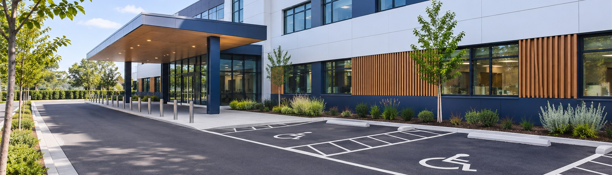
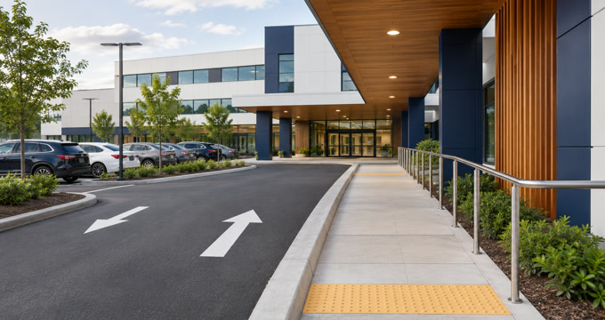
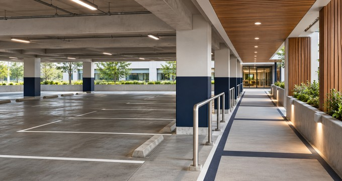

주차
주차장 위치와 이용 절차를 확인하세요.
주차 요금과 이용
주차 · 주차장 위치와 이용 절차를 확인하세요.





| 구분 | 대상 | 요금 기준 | 확인 방법 |
|---|---|---|---|
| 진료 방문 | 외래 환자·영수증 미발급 검사 환자 | 8시간 무료 | 진료 영수증 또는 해당 부서 확인증 |
| 입·퇴원 | 환자와 보호자 차량 1대 | 입원 당일과 퇴원 당일 무료 | 원무 창구 등록 |
| 장례 상주 | 상주 차량 최대 6대 | 장례 기간 무료 | 장례 안내실에 차량 정보 제출 |
| 장례 방문 | 조문 차량 | 3시간 할인권 적용, 이후 일반 요금 | 장례 안내실 할인권 |
| 정기권 | 등록 차량 | 15일권·월권 | 주차 관리 창구에서 금액 확인 |
| 일반 차량 | 일반 내원객 | 입차 후 30분까지 무료, 추가 요금은 30분에 1,500원이며 하루 상한은 20,000원 | 무인 정산기 또는 정산 부스 |
주차장 위치와 정산
주차 공간은 약 350대 규모이며 장애인 주차 구역을 운영합니다.
- 장애인 주차 구역을 운영합니다.
- 지상 전면 주차장과 후면 주차장, 지하 1층 주차장을 이용할 수 있습니다.
- 정산 기기 위치는 후문 쪽 1층과 매장 옆 지하 1층입니다.
- 할인 확인 자료가 없으면 일반 요금으로 정산해야 합니다.
- 차량과 주차장 안의 소지품은 직접 확인해 주세요.
이용 시 확인할 사항
정산출차 전에 무인 정산기 또는 정산 부스에서 주차 요금을 납부합니다.
할인 확인진료 영수증이나 입원 확인 자료로 주차 혜택 적용 여부를 조회합니다.
할인권 분실할인 자료를 제시하지 못해 정산한 금액은 환불이 제한될 수 있습니다.
정산기 위치정산기는 주 출입구 인근과 지하 주차 구역에 마련되어 있습니다.
정기권정기 주차권은 별도 등록과 이용 기간 확인이 필요합니다.
차량 관리차량 안 귀중품은 직접 보관하고 주차장 내 안전 표지를 따라 주세요.
문의차량 등록, 정기권과 할인 적용은 주차 관리 창구에 확인합니다.
입원 차량입원 차량 지원은 입원 확인과 차량 등록 절차를 거쳐 적용됩니다.
외래 차량외래 이용 차량은 영수증을 준비해 정산 전에 지원 기준을 확인합니다.
검사 방문검사만 이용한 경우 지원 여부를 검사 확인 자료로 문의합니다.
출차 전 정산정산 결과와 차량 번호를 확인한 뒤 주차장을 나갑니다.
주차 구역주차 구역별 출입구와 엘리베이터 위치는 현장 표지를 확인합니다.
혼잡 시간진료 시작 전후 혼잡할 수 있으므로 여유 있게 도착해 주세요.
사고 신고주차 중 차량 사고나 시설 파손은 관리 창구에 즉시 알립니다.
분실물주차장 분실물은 발견 장소와 시간을 확인해 관리 창구에 문의합니다.
차량 높이높이 제한이 있는 구역은 입구 표지의 기준을 확인해 진입합니다.